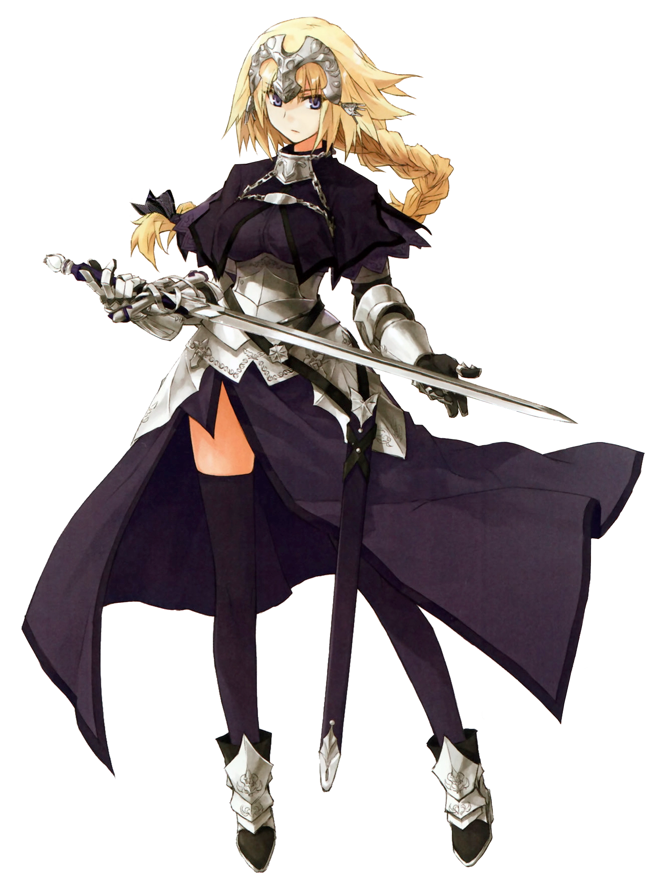

Verdadeiro nome: Jeanne d'arc
Breve Verdadeiro Mito
Jeanne d'Arc, a Porta-estandarte que Guia Corretamente a Guerra do Santo Graal, era a Santa de Orleans. Um santo católico nascido em 1412 Domrémy, France, e a heroína da França que libertou Orléans na Guerra dos Cem Anos.
Vida
Jeanne d'Arc era filha de um fazendeiro comum. Ela afirma que recebeu a ordem de Deus para lutar. Ela ouviu o lamento do Senhor de que o mundo mudou direto para o inferno. O Senhor chorou de tristeza porque ninguém podia impedi-lo e as pessoas não tinham permissão para viver de forma simples, e eram compelidas a se tornarem animais ou comida. O conflito nunca acabou, e o sangue continuou a chover incessantemente e encharcar a terra. Ela recebeu uma revelação do Senhor, a voz não continha glória ou vitória, nenhuma obrigação ou senso de propósito, mas apenas o Senhor lamenta. Ela pegou seus murmúrios pequenos e fracos que todo mundo não conseguiu ouvir.
Ela respondeu jogando fora sua vida como uma simples aldeã e a alegria de amar alguém e ser amada de volta. Além disso, não haveria compensação. Ela sabia que certamente seria desprezada pelas massas tanto de inimigos quanto de aliados, considerando suas crenças nas diretrizes da igreja para o comportamento adequado das mulheres. Era uma coisa muito assustadora de se contemplar. Era uma loucura para uma mera aldeã do campo saltar para o campo de batalha onde a intenção assassina das pessoas girava. Ela não daria as costas aos clamores do Senhor. Ela decidiu dedicar sua vida a se opor ao inferno deste mundo para ajudar a parar as lágrimas do Senhor e acalmá-lo. Ela vestiu sua armadura em seu corpo, pendurou uma espada na cintura e carregou a bandeira. Ela lutou ao lado de Gilles de Rais.
Tendo nascido em uma família camponesa, Jeanne nunca conheceu o conteúdo dos muitos livros de oração. Ela se esforçou muito para aprendê-los, mas parece que ela simplesmente nasceu incapaz de ler ou escrever. O máximo que ela conseguiu foi aprender a assinar seu nome. Enquanto ela se preocupava com isso, no final, ela decidiu que precisava de pouco mais para orar ao Senhor. Como ela se lembrava, um de seus companheiros que cavalgava ao lado dela, Gilles, uma vez riu e prometeu a ela que isso era mais do que suficiente.
Dizem que na realidade tudo o que aconteceu foi que ela usou táticas que os cavaleiros da época não usavam por desprezo e honra. Acredita-se por Mikiya Kokutou que ela utilizou a Contra-Força em suas ações.
Tanto Jeanne quanto Gilles foram condecorados como salvadores e heróis nacionais pelo rei Charles na catedral com a melodia Ars Nova tocando ao fundo.
Morte
Jeanne foi morta na Place du Vieux-Marché em Rouen em 30 de maio de 1431. Desprezada por palavras de condenação ao ser levada à pira e sentindo apenas um pouco de dor ao suportá-la, ela já havia abandonado emoções como medo, decepção e arrependimento desde o início de suas batalhas, então ela foi capaz de caminhar em direção à morte sem vacilar em seus passos. Quando ela inconscientemente pegou a cruz que estava em seu peito até que eles a tiraram dela, ela sentiu alguma tristeza, pois não havia nada para sustentar seu coração. Pouco depois, ela recebeu uma cruz de madeira feita por um inglês que a reverenciava, agradecendo em silêncio enquanto ele se ajoelhava e chorava. Suas mãos estavam amarradas a uma estaca de madeira atrás dela, e o sacerdote presente completou a recitação de seu julgamento final antes de jogar a tocha sobre a pira. Como eles acreditavam que a perda da carne era o maior dos medos, era a punição mais cruel que poderia ser imposta a ela.
As chamas começaram a queimar sua pele, chamuscar sua carne e carbonizar seus ossos, enquanto ela falava o nome do Senhor e da Santa Mãe contra aqueles que denunciavam suas orações como apenas uma mentira. Ela só conseguia achar estranhos tais pensamentos, acreditando que as orações nada mais são do que orações, não importa a quem seja rezada, que não carregam verdades ou falsidades intrínsecas. Embora ela desejasse contar a eles sobre o pensamento, ela foi incapaz de produzir qualquer som. Enquanto ela queimava, ela teve visões de seu passado, sua família comum em sua aldeia rústica e ela mesma, "o tolo que fugiu e jogou tudo isso de lado". Sabendo como sua jornada terminaria desde o início, ela sentiu que certamente poderia ter sido tola em suas ações, que poderia ter vivido uma vida normal, se casado e morado junto com seu marido e filho.
Se ela tivesse simplesmente calado a voz e abandonado os soldados que lamentavam, ela poderia ter tido essa vida, mas sentiu que não era um erro ter trilhado seu caminho por causa daqueles que ela salvou. Ela sabia, desde o momento em que escolheu ir para a batalha, que teria tal fim, e sentiu que nunca chegaria ao escárnio de si mesma por suas escolhas. Seu passado, futuros impossíveis e a cruel realidade diante dela não tinham sentido diante de suas orações, oferecendo a si mesma que, mesmo que todos a condenassem, ela não se trairia. Em vez de continuar a olhar para trás em seu caminho ou ansiar por outro futuro, ela só desejava um descanso silencioso. Dentro da selvageria, ela manteve apenas uma única oração em seu coração até o fim, uma sem mácula pelo arrependimento e cheia de sinceridade. Quando ela disse suas palavras finais, "...Ó Senhor, eu me entrego a Ti...", sua consciência terminou e ela foi libertada de seu sofrimento. Embora o sonho da menina terminasse ali, "o sonho de La Pucelle estava apenas começando".
Sua morte fez Gilles de Rais enlouquecer, virar as costas para Deus para praticar magia negra e cometer atrocidades antes de ser capturado e enforcado até a morte.
Breve Função na Historia
Devido à irregularidade da Grande Guerra do Santo Graal e à existência continuada do Governante anterior da Terceira Guerra do Santo Graal, Shirou Kotomine, o Governante é convocado sob condições estranhas. Embora ela deva atuar como mediadora imparcial entre as duas facções, ela sente um pressentimento de que há alguém desconhecido que ela deve encontrar, Shirou, que tem precedência sobre seu papel como mediadora. Em vez de receber um corpo espiritual, ela possui uma garota humana chamada Laeticia, uma anfitriã disposta, devido ao governante anterior ainda existir. Atuando como Laeticia e usando sua habilidade natural como Governante para que os outros acreditem em suas palavras, ela diz a seus amigos e professores de sua escola que está fazendo uma jornada necessária. Ela pondera a estranheza de sua convocação, seu corpo físico, sendo convocado na França, longe do campo de batalha, e a estranheza geral de ser o décimo quinto Servo em vez do oitavo. Decidindo que deve ser devido à única guerra, ela reúne os suprimentos necessários antes de partir para Trifas.
Incapaz de viajar na forma espiritual, ela deve viajar normalmente por transporte público e avião. Reunindo seu conhecimento sobre o voo, ela conhece a situação entre as duas facções, preocupada com o dano que catorze Servos causarão. Incapaz de determinar o motivo exato de sua convocação, ela decide não especular até chegar ao campo de batalha.
Depois que o Homunculus recebe o coração de Saber of Black, Ruler se oferece para cuidar do próprio Homunculus. Ela pretendia guiar o Homúnculo, que se autodenomina "Sieg", a construir uma nova vida para si mesmo. No entanto, Ruler mais tarde encontraria Sieg participando da guerra, apesar de sua insistência de que ele pudesse viver uma vida normal.
Em seu caminho para a localização da Red Faction, Ruler é o primeiro forasteiro a ver Assassin of Red's Hanging Gardens of Babylon. Quando uma batalha entre as duas facções começa, Ruler se vê novamente sob ataque de alguns servos hostis. Ela consegue se defender da explosão devastadora do Berserker of Red. Ruler se junta à Black Faction para se infiltrar nos Jardins Suspensos para recuperar o Grande Graal roubado e comanda pessoalmente vários Servos para atacar Darnic, que se fundiu com Lancer of Black.
«Em nome do Ruler — de Joana d'Arc. Ordeno a todos os Servos reunidos aqui com meus Feitiços de Comando! Derrote o vampiro que já foi Vlad III! » (Ruler)
No entanto, Darnic escapa de ser derrotado quando os Red Faction Servants de repente entram em colapso, deixando Ruler perseguir Darnic com a breve assistência de Archer of Black.
Ruler testemunha bem a tempo a morte de Darnic e Lancer of Black nas mãos de Shirou. Ruler questiona os motivos de Shirou e fica desgostoso com suas ambições egoístas de forçar a humanidade a aceitar a salvação que eles nunca pediram. Embora ela ainda queira questioná-lo ainda mais, os Servos da Facção Vermelha aparecem e a forçam a recuar com os Servos da Facção Negra.
Ruler se une à Black Faction, já que a situação da Grande Guerra do Santo Graal não é mais normal. Ruler também continua a atuar como zelador principal de Sieg. Quando Assassin of Black é descoberto matando magos, Jeanne ajuda a Black Faction a derrotar Assassin. Embora Ruler esteja horrorizada ao descobrir a verdadeira natureza de Assassin, ela ainda escolhe acabar com a existência de Assassin.
Isso rende a Ruler o ódio completo de Archer of Red, que tenta vingar as "pobres crianças" matando Ruler. Rider of Red entra em cena para enfrentar o próprio Archer, permitindo que Ruler continue sua busca por Shirou.
Caster of Red intercepta Ruler e começa a atormentá-la psicologicamente, mas não é até que ele mostra seu Sieg sendo queimado na estaca que Ruler quase quebra sob as maquinações de Caster. Para adicionar insulto à lesão, Caster revela a presença do ex-companheiro de Ruler, Gilles de Rais. Ruler inicialmente acredita que Gilles seja outra ilusão, apenas Gilles para confirmar que ele é realmente real; em outras palavras, um Servo.
Tanto Caster quanto Gilles atormentam Ruler por seus sentimentos românticos por Sieg. Ela tenta negar qualquer atração por Sieg devido ao seu voto de amar a todos igualmente.
Ruler eventualmente enfrenta Shirou, com Sieg e um Gilles reformado ao seu lado. Ruler decide usar seu Noble Phantasm, La Pucelle, ao custo de sua própria vida. Ruler não consegue fazer muito além de custar um braço a Shirou, e Ruler morre nos braços de Sieg. Ela deixa para trás o corpo de sua nave, Laeticia.
Sieg mais tarde se transforma no dragão Fafnir e transporta o Santo Graal para o Lado Reverso do Mundo para que o desejo de Shirou não se torne realidade. Uma quantidade não especificada de tempo depois, Jeanne consegue viajar para o Lado Reverso do Mundo do Trono dos Heróis. Ela alcança Sieg e o reverte à forma humana. Eles decidem viajar juntos, e ela finalmente confessa que o ama.